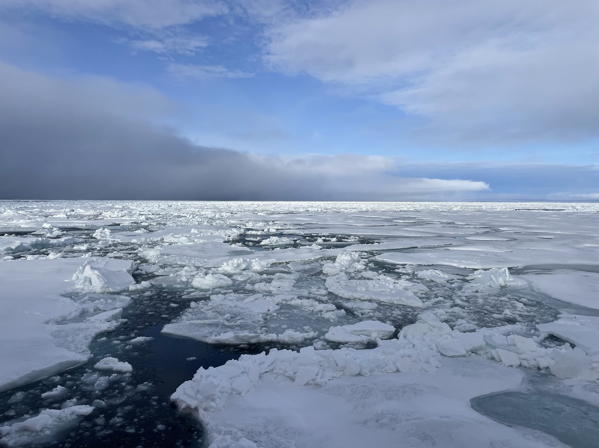

sea iceInSAR and SAR-based methods for reconstructing sea ice freeboard, elevation, roughness, and topographic patterns in the Arctic and Southern Ocean.
Read project details snow
snow
Observations of snow properties, snow distribution, and radar penetration effects over sea ice and glaciers.
Read project details coastal region
coastal region
SAR approaches for coastal hazard monitoring, ship detection, and wind speed retrieval.
Read project details